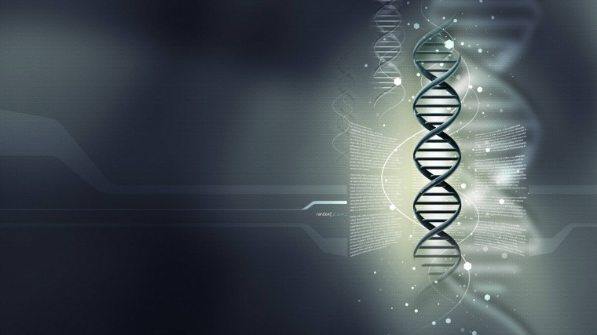
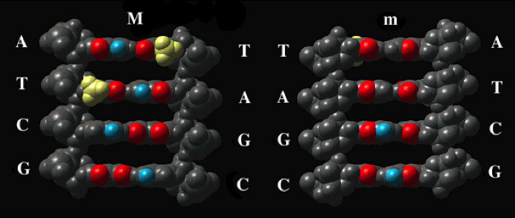
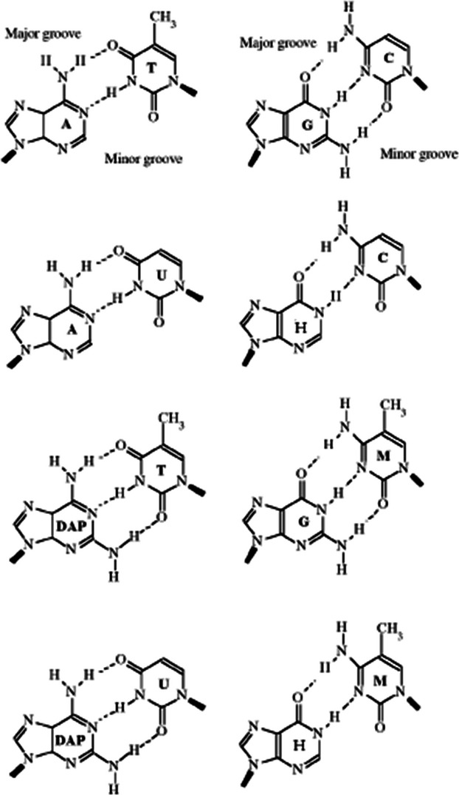
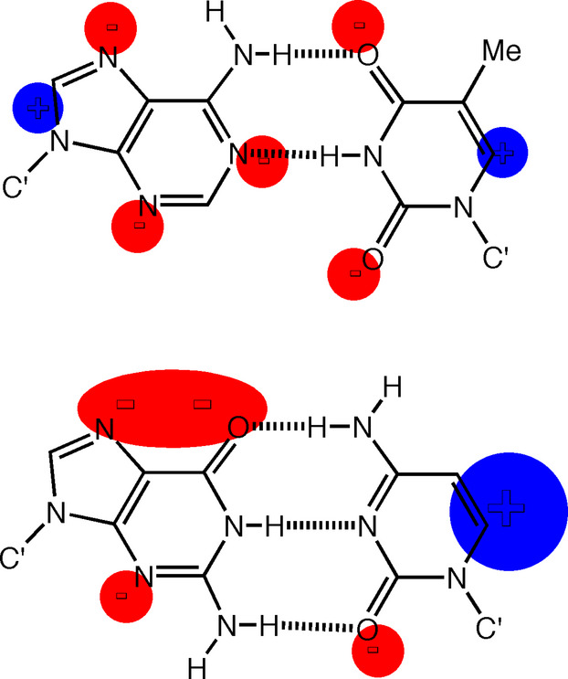

|  |
| DNA | Bioinformática | Histórico do DNA | Pesquisadores |
DNA como armazenamento de informaçõesQual é a natureza da informação genética armazenada no DNA? A distinção entre um código linear responsável por especificar as sequências de moléculas de RNA e proteínas e também o reconhecimento específico da sequência por proteínas de ligação ao DNA, e um código estrutural igualmente importante e mais contínuo, especificando a configuração e dinâmica do polímero amplia o repertório informacional de a molécula. Ambos os tipos de informação de DNA estão intrinsecamente acoplados na organização da sequência primária, mas enquanto o código linear é, em uma primeira aproximação, uma leitura digital direta, o código estrutural é determinado não por pares de bases individuais, mas pelo interações aditivas de etapas básicas sucessivas. Este último código, sendo localmente mais contínuo, possui portanto uma forma análoga. É importante ressaltar que a manifestação de propriedades análogas depende do comprimento da sequência de DNA. Por exemplo, sob condições fisiológicas, o desenrolamento do DNA manifestado como fusão pode ser restrito a uma sequência curta (digamos, até ~ 10 pb), enquanto o desenrolamento na forma de um eixo helicoidal enrolado pode afetar centenas de pares de bases. A leitura direta e indireta dos locais de reconhecimento de DNA pelas proteínas é um dos principais determinantes da seletividade de ligação. Na leitura direta, as bases individuais em uma sequência de ligação fazem contatos diretos e específicos com a superfície da proteína, enquanto na leitura indireta, a afinidade de ligação depende do reconhecimento de uma estrutura, como uma curva ou bolha de DNA, cuja formação é influenciada pelo DNA. sequência, mas em geral não requer uma proteína em contacto com uma base específica. Na prática, o reconhecimento do DNA pelas proteínas abrange efetivamente um continuum desde completamente digital até completamente analógico, com muitas proteínas utilizando ambos os modos. Para ambos os modos de reconhecimento, a dupla hélice do DNA difere e é indiscutivelmente mais eficaz do que a dupla hélice do RNA. A leitura direta requer contato íntimo entre grupos químicos expostos nas superfícies das proteínas e dos ácidos nucleicos. Para o reconhecimento do DNA, a leitura direta, na maioria dos exemplos, assume a forma de um motivo de ligação ao DNA sendo inserido no sulco principal. Neste sulco, diferentes grupos exocíclicos das bases de um par são expostos em comparação com aqueles do sulco menor (Fig. 1 ). Consequentemente, embora os pares de bases A – T e T – A em uma sequência sejam distinguíveis pela posição do padrão de carga do grupo metil timina no sulco maior, no sulco menor, os padrões de carga expostos da base T – A e A – T pares são idênticos. Da mesma forma, os padrões de carga dos pares de bases C – G e G – C no sulco principal são distinguíveis pela posição relativa do grupo 4-amino da citosina. Novamente, porém, há pouca diferença nos arranjos espaciais relativos dos padrões de carga dos pares de bases C – G e G – C no sulco menor. A ranhura principal fornece, portanto, mais informações de sequência do que a ranhura secundária. No entanto, o que é mais importante, a morfologia ampla e rasa do sulco principal do DNA contrasta fortemente com a estrutura estreita e profunda do sulco principal do RNA. Este padrão é invertido para o sulco menor. Para um motivo de ligação ao DNA proteico, particularmente aquele que contém uma hélice α, o acesso ao sulco principal do DNA é mais fácil do que ao sulco menor. Esta diferença fundamental entre DNA e RNA decorre diretamente de suas estruturas químicas. Enquanto o DNA pode adotar (pelo menos) duas formas de estruturas de dupla hélice destra, A-DNA e B-DNA, o RNA só pode formar uma dupla hélice do tipo A devido às restrições estéricas impostas por o resíduo hidroxila 2 'na ribose. A estrutura do B-DNA, proposta por Watson e Crick, é mais estável em alta umidade, mas se converte na forma A à medida que a atividade de água é reduzida. Neste argumento, é a capacidade de adotar a forma B que facilita o acesso direto à informação da sequência de DNA.  Figura 1 - Exposição de grupos químicos de bases de nucleotídeos nas ranhuras maiores e menores do DNA. A transição A - B não apenas afeta a leitura direta, mas também altera as propriedades físico-químicas do polímero. Uma dupla hélice do tipo A é, em média, mais rígida que uma dupla hélice do tipo B e, consequentemente, a distorção do A-DNA para uma configuração curvada específica é energeticamente menos favorável do que a distorção correspondente no B-DNA. Espera-se que tais diferenças favoreçam o B-DNA como substrato preferido para embalagens que envolvam curvaturas apertadas do DNA. Embora a formação de uma estrutura do tipo B seja um aspecto crucial da funcionalidade do DNA, os fatores que alteram o equilíbrio A - B são, além da atividade da água, pouco compreendidos. Um aspecto é o tipo base. Em princípio, a capacidade de codificação do DNA pode ser alcançada não apenas pelos pares de bases canônicos A – T e G – C, mas também por outras possibilidades. Por exemplo, um polímero de DNA com pares de bases diaminopurina-timina (DAP-T) e hipoxantina-citosina (H-C) com, respectivamente, três e duas ligações de hidrogênio interbases (Fig. 3 ) apresentaria, em princípio, um potencial semelhante, para reconhecimento de proteínas e estabilidade térmica. Outras variações seriam moléculas de DNA nas quais todos os pares de bases contêm duas ou três ligações de hidrogênio. No entanto, as bases dos componentes não apenas especificam um código digital, mas também afetam as propriedades físico-químicas da molécula. Por exemplo, moléculas de DNA com um padrão invertido de ligações de hidrogênio (pares de bases DAP-T e H-C) adotam mais prontamente uma conformação do tipo A do que o DNA com os pares de bases canônicos. Isto ocorre porque as propriedades da dupla hélice dependem não apenas da capacidade de emparelhamento de bases das bases constituintes, mas também das interações de empilhamento entre pares de bases adjacentes. Alterar as interações de emparelhamento de bases transferindo efetivamente um grupo 2-amino da guanina para a adenina (criando assim hipoxantina e diaminopurina) altera o empilhamento geral porque o grupo 2-amino carregado, por estar em um ambiente químico imediato diferente, também afeta os momentos dipolares associado a pares de bases individuais e, consequentemente, às interações de empilhamento entre pares de bases (Fig. 4 ). Em outras palavras, a capacidade de assumir a conformação B, que confere ao DNA um aspecto importante de seu papel genético único, é ela própria dependente do tipo de base e, em particular, dos pares de bases A – T e G – C. Embora isso possa constituir uma razão para a seleção desses pares de bases na maioria das moléculas de DNA, nenhum argumento tão simples pode ser apresentado para o uso de pares de bases A – U e G – C no RNA, embora mesmo no RNA a estabilidade de diferentes bases etapas e, portanto, da própria dupla hélice provavelmente depende da natureza precisa dos pares de bases constituintes.  Figura 3 - Estruturas de pares de bases alternativos que mantêm ligações de hidrogênio Watson-Crick. A, adenina; C, citosina; DAP, diaminopurina; G, guanina; H, hipoxantina; Uracila. Adaptado com permissão de Bailly et al.  Figura 4 - Momentos dipolares dos pares de bases A – T e G – C. Reproduzido com permissão de Hunter. |
Todos os direitos reservados |